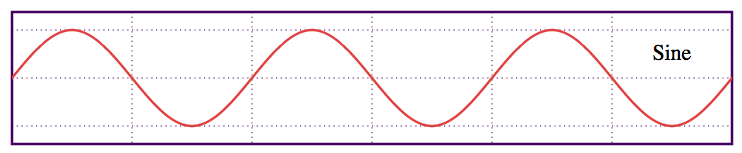

What is this?
This is a an emulated keyboard (a SYNTHESIZER!) that spans three musical octaves (C2-B5).
Give it a shot, click any key with your mouse, or use the keys on your keyboard as indicated on the screen!
(If you don't hear anything, try using Google Chrome or update your browser to the newest version.)
Give it a shot, click any key with your mouse, or use the keys on your keyboard as indicated on the screen!
(If you don't hear anything, try using Google Chrome or update your browser to the newest version.)
How does it work?
This keyboard works by generating Waveform Audio file data dynamically, converting it into a base64-encoded dataURI, and subsequently playing it using the HTML5 audio element
from within your web browser.
Basically, we're using math to make sounds. Hooray. This is different than other HTML5 pianos in that it doesn't use pre-recorded audio files , and that it's a little bit more refined.
Basically, we're using math to make sounds. Hooray. This is different than other HTML5 pianos in that it doesn't use pre-recorded audio files , and that it's a little bit more refined.
The Theory
So you really want to get into details? Well, first of all, creating waveform is simple enough (it's just a sine wave, and we have a Math.sin() function in JS!), and all of the information you need about packing Waveform Audio data and creating the dataURI can be found here, with much thanks to sk89q. I'm going to assume a basic understanding of Javascript in this brief walkthrough, don't hesitate to e-mail me if you have any questions or concerns!
Unfortunately, all you get out of creating a sine wave is an extremely bland (and to be blunt, annoying) flat tone.
Real musical instruments create full, lively notes. We want to emulate that. How do we go about doing so?
Well, thank the University of Salford - Manchester for this lovely page. I'll provide the less mathematically-inclined with a bit of a walk through, so you can visualize what we're doing at each step.
Step 1. Understanding your sine wave.
Alright, so you copy-and-pasted the code from sk89q's page above and you have your sine wave based on the frequency of note you want to produce. Actually, what you have is a bunch of text that programatically generates the data points for a sine wave. Mamma mia!
From the code I've outlined above, we end up with a waveform that looks like this (thanks to Wikipedia for this image):
So what can we do?
Step 2. Transforming your sine wave.
We can now use the wonderful world of maths (omg!) to help us out. We want to transform our sine function, as defined above, into something a little more... real. Something you'd hear in the natural world. So, how does a real instrument create sound? (Image Credit.) Well, we have a few stages. During the attack, you're plucking/hitting a string (in the case of a piano) or initializing the oscillation which will produce your sound. There's a bit of a decay, then a hold, should you decide to maintain to oscillation, and finally a release (and subsequent death of the signal). Now, let's forget about the hold and release right now, and simplify our keyboard into just an attack and subsequent decay. Basically, what we want to do is start off with the Amplitude of our sine wave at 0%, bring it to a peak of 100% in a very short amount of time (the attack on a piano is extremely fast!) and then decay afterwards.
We accomplish this with what I call a dampener.
Well, we have a few stages. During the attack, you're plucking/hitting a string (in the case of a piano) or initializing the oscillation which will produce your sound. There's a bit of a decay, then a hold, should you decide to maintain to oscillation, and finally a release (and subsequent death of the signal). Now, let's forget about the hold and release right now, and simplify our keyboard into just an attack and subsequent decay. Basically, what we want to do is start off with the Amplitude of our sine wave at 0%, bring it to a peak of 100% in a very short amount of time (the attack on a piano is extremely fast!) and then decay afterwards.
We accomplish this with what I call a dampener.
First, the attack:
Next, the decay:
Please note that curVol now contains our modified (dampened) Amplitude. We will apply it to the wave with everything else in the next step.
The reason we use a logarithm is that note frequencies scale exponentially (each note is 2x the frequency of the one below it in octave) and we don't quite want a doubling.
I got the best sounding results using this algorithm after fiddling around for a while. Here are two others you can play with:
Step 3. Adding noise.
Alright. We've created the basis for modifying our waveform to give it some life. However, it's still going to sound extremely, extremely robotic. So now we'll do two things. We're first going to add noise to our signal, and then we're going to modulate it back to the carrier signal to normalize it back to within the range we'd like.
Unfortunately, all you get out of creating a sine wave is an extremely bland (and to be blunt, annoying) flat tone.
Real musical instruments create full, lively notes. We want to emulate that. How do we go about doing so?
Well, thank the University of Salford - Manchester for this lovely page. I'll provide the less mathematically-inclined with a bit of a walk through, so you can visualize what we're doing at each step.
Step 1. Understanding your sine wave.
Alright, so you copy-and-pasted the code from sk89q's page above and you have your sine wave based on the frequency of note you want to produce. Actually, what you have is a bunch of text that programatically generates the data points for a sine wave. Mamma mia!
var v = volume * Math.sin((2 * Math.PI) * (i / sampleRate) * frequency);
So, first of all, if you're unfamiliar with waveforms I'll give you a brief overview of what we'd like to do here, along with how we're going to do it. You need to understand the following equation:
FREQUENCY (F) = 1 / PERIOD (T)
Your period is the amount of time (t) it takes for one full oscillation of your wave. The frequency, measured in Hz (the unit 1/s) is the amount of oscillations your wave performs per second. I'm sure most of you took some sort of physics class, so I'll avoid lecturing, but basically every sound is merely just a "buzz", or vibration in the air. The faster this buzz (higher frequency, more oscillations per second, shorter period), the higher the pitch of the note.From the code I've outlined above, we end up with a waveform that looks like this (thanks to Wikipedia for this image):

One period is every two sets of vertical dotted lines. This wave is what's making our flat, ugly tone, and we want to change it. Imagine this continuing on a couple of hundred times, fluctuating between -volume and +volume (the top and bottom horizontal dotted lines, i.e., the amplitude of the wave).So what can we do?
Step 2. Transforming your sine wave.
We can now use the wonderful world of maths (omg!) to help us out. We want to transform our sine function, as defined above, into something a little more... real. Something you'd hear in the natural world. So, how does a real instrument create sound? (Image Credit.)
First, the attack:
var attack = 0.002;
if(i<=sampleRate*attack) {// Linear build-up, fast.
curVol = volume * (i/(sampleRate*attack));}
What we're doing here is setting our attack time to 0.002s (2ms!) and linearly increasing the volume (wave amplitude) from the start of the wave until we reach the end of the attack (again, the 2ms). i is our counter variable, indicating our current position in the waveform. Though this might be barely perceptible to your average person, increasing the attack time to even 0.02s (20ms) has serious consequences on your sound.Next, the decay:
else {
// Decay. Exponentially increasing (faster) decay
// at higher frequencies due to logarithmic dampener.
var dampen = Math.pow(0.5*Math.log((frequency*volume)/sampleRate),2);
curVol = volume * Math.pow(
(1-((i-(sampleRate*attack))/(sampleRate*(seconds-attack)))),dampen
);
}
Woo! That's a lot of stuff. Logarithms and exponents oh my! What we're doing here is first setting a dampener, which is just a mathematical function that creates a larger number at higher frequencies. You'll notice that if you hit a low note on your piano, it sticks around for a lot longer than a high note. I want to emulate that, and this is a "hack" to approximate it without actually simulating artificial strings and doing real physics. The last line at the bottom? Just saying we want to decay toward 0, in a polynomial fashion based on the value of our dampener.Please note that curVol now contains our modified (dampened) Amplitude. We will apply it to the wave with everything else in the next step.
The reason we use a logarithm is that note frequencies scale exponentially (each note is 2x the frequency of the one below it in octave) and we don't quite want a doubling.
I got the best sounding results using this algorithm after fiddling around for a while. Here are two others you can play with:
var dampen2 = Math.log((frequency*volume)/sampleRate);
var dampen3 = 1 + (0.01 * frequency);
Step 3. Adding noise.
Alright. We've created the basis for modifying our waveform to give it some life. However, it's still going to sound extremely, extremely robotic. So now we'll do two things. We're first going to add noise to our signal, and then we're going to modulate it back to the carrier signal to normalize it back to within the range we'd like.
// This can generate noise by creating out-of-phase waves.
var base = function(x) {
x = x || 0;
return Math.sin((2 * Math.PI) * (i / sampleRate) * frequency + (x * Math.PI));
};
var mod = [];
mod.push(function(x) {
return 1 * Math.sin(2 * Math.PI * ((i / sampleRate) * frequency) + x); });
mod.push(function(x) {
return 0.5 * Math.sin(2 * Math.PI * ((i / sampleRate) * frequency) + x); });
mod.push(function(x) {
return 0.25 * Math.sin(2 * Math.PI * ((i / sampleRate) * frequency) + x); });
v = mod[0](Math.pow(base(0), 2) + (0.75 * base(0.25)) + (0.1 * base(0.5)));
v = Math.min(Math.max(v, -1), 1);
v = curVol * v;
What we have here is base(), our function which generates our wave. If we don't give it a value, it returns our basic waveform. If we do give it a value, it shifts the wave by 0.5*x periods. Note that any multiple of 2 here will give an overlapping period and will just give us our initial waveform. The idea is that you can create an out-of-phase wave with the same frequency that will interfere with your basic waveform and "warp" it, removing the "perfect", or flat tone from it.
The mod[] array contains frequency modulation functions, you can use them however you'd wish, but always apply mod[0] at the end - it contains your carrier wave, and acts as a way to normalize all of the interference you create by combining and modulating other waveforms.
Our final waveform is a modulated combination of our initial waveform interfering with two "quieter" versions of itself, one at 75% amplitude, and the other at 10% amplitude, both slightly out-of-phase with their parent.
Finally, we multiply curVol, our dampened amplitude, by our final waveform to finish creating our note.
Step 4. Output
Take your data, base64 encode it, set the source data of an HTML5 Audio object to your newly generated dataURI and play it! Voila, a musical note. Hopefully you get the basics of what we're doing to our waveforms here. :)
Addendum 1. Other instruments, and Karplus-Strong string synthesis
So, since initially creating this page, I've implemented a number of different instruments. The organ is much like the piano, although with a more extended attack. The "EDM" is just a highly-modulated version of the piano with a bit of harmonic resonance added in. The acoustic guitar, however, is an entirely different ball game.
The "plucked string" sound is generated by what's called Karplus-Strong string synthesis. In a nutshell, you create a buffer that's the size of your period (based on your sampling rate and frequency). This buffer holds noise, it basically just alternates (randomly) between an amplitude of +1 and -1. You output this buffer repeatedly to give your note its pitch due to its periodicity. However, each additional time you loop through the "noise" buffer, you average each point in the buffer with the one immediately preceding it, effectively filtering it. What this causes is a decay of your signal over time, and it "smooths" out your initially chaotic waveform. You can read more about the Karplus-Strong algorithm at Columbia Faculty of Music, or on Hasen el Judy's blog.
The mod[] array contains frequency modulation functions, you can use them however you'd wish, but always apply mod[0] at the end - it contains your carrier wave, and acts as a way to normalize all of the interference you create by combining and modulating other waveforms.
Our final waveform is a modulated combination of our initial waveform interfering with two "quieter" versions of itself, one at 75% amplitude, and the other at 10% amplitude, both slightly out-of-phase with their parent.
Finally, we multiply curVol, our dampened amplitude, by our final waveform to finish creating our note.
Step 4. Output
Take your data, base64 encode it, set the source data of an HTML5 Audio object to your newly generated dataURI and play it! Voila, a musical note. Hopefully you get the basics of what we're doing to our waveforms here. :)
Addendum 1. Other instruments, and Karplus-Strong string synthesis
So, since initially creating this page, I've implemented a number of different instruments. The organ is much like the piano, although with a more extended attack. The "EDM" is just a highly-modulated version of the piano with a bit of harmonic resonance added in. The acoustic guitar, however, is an entirely different ball game.
The "plucked string" sound is generated by what's called Karplus-Strong string synthesis. In a nutshell, you create a buffer that's the size of your period (based on your sampling rate and frequency). This buffer holds noise, it basically just alternates (randomly) between an amplitude of +1 and -1. You output this buffer repeatedly to give your note its pitch due to its periodicity. However, each additional time you loop through the "noise" buffer, you average each point in the buffer with the one immediately preceding it, effectively filtering it. What this causes is a decay of your signal over time, and it "smooths" out your initially chaotic waveform. You can read more about the Karplus-Strong algorithm at Columbia Faculty of Music, or on Hasen el Judy's blog.